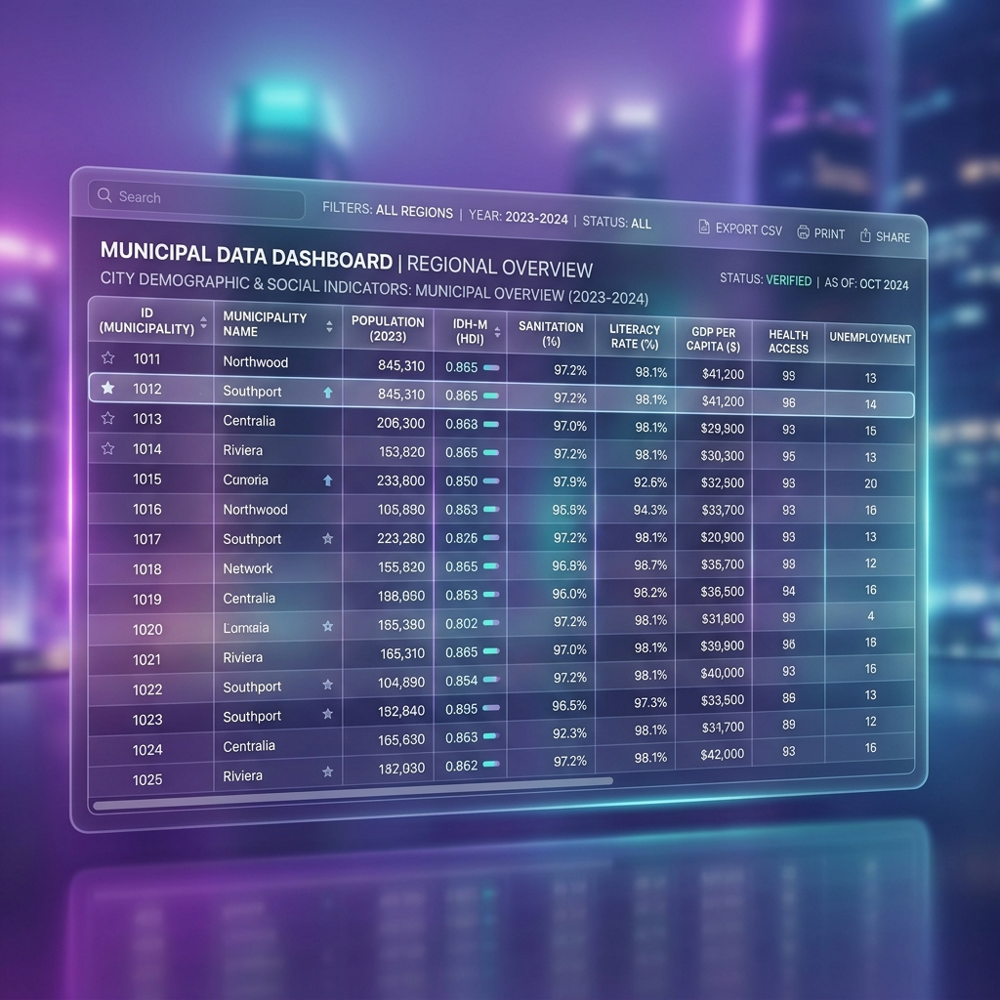

Aguardando seleção do município para processamento analítico...
Onde investir primeiro? O sistema cruza Impacto no IDHM vs. Urgência Crítica para calcular a equação ótima de alocação de recursos públicos.
Simule melhorias nos indicadores de base e veja o impacto projetado no IDHM municipal.
Baixe a base histórica completa do município selecionado em formato CSV para análises externas.
Inclui dados de População, PIB, IDH, Saneamento e Educação de 2018 a 2030 (consolidado e projetado).

| CADÚNICO | BENEFICIÁRIOS BOLSA FAMÍLIA | TAXA DESEMPREGO / INFORMALIDADE | ÍNDICE DE VULNERABILIDADE |
|---|---|---|---|
| - | - | - | - |
| CONFLITO ARMADO / FACÇÕES | ROTAS INSEGURAS PARA ESCOLA | TRABALHO INFANTIL / SEGURANÇA | USO DE DROGAS LOCAL |
|---|---|---|---|
| - | - | - | - |
| Alunos com NEE (Matriculados) | Matrículas EJA (2023) | Perfil de Autodeclaração | Fonte dos Dados | Regional |
|---|---|---|---|---|
| - | - | - | SIGEduc / QEdu 2023 | 2ª DIREC |
Explicação técnica sobre o indicador.
| INDICADOR | MUNICIPIO/RN | MÉDIA ESTADUAL (RN) | MÉDIA NACIONAL | FONTE |
|---|---|---|---|---|
| Cobertura de Água Potável | - | ~74,1% | 83,1% | Inst. Água e San / CAERN |
| Cobertura de Esgotamento Sanitário | - | ~25,8% | 59,7% | Inst. Água e San / CAERN |
| Habitantes sem esgoto coletado | - | Esgoto: a maior carência regional identificada. | -- | Cálculo Estimado |
| Habitantes sem água tratada | - | Água: Cobertura parcial, dependência de poços. | -- | Cálculo Estimado |
| Estação de Tratamento (ETE) | - | Dados PM / CAERN | ||
Selecionando análise...
"Selecione um município e clique no botão abaixo para gerar uma recomendação estratégica baseada em inteligência artificial."
| Fonte | Dados Obtidos | Link |
|---|---|---|
| IBGE – Censo Demográfico 2022 | População, domicílios, densidade, alfabetização, PIB per capita, IDHM | ibge.gov.br |
| Prefeitura Municipal | Gravidez na adolescência, programas habitacionais, saneamento, ETE | Portal Municipal |
| DATASUS / Ministério da Saúde | Taxa de gravidez na adolescência (10–19 anos), saúde materno-infantil | datasus.saude.gov.br |
| MDS / Gov.br – Bolsa Família | Número de famílias beneficiárias (nov/2025) | gov.br/mds |
| Instituto Água e Saneamento | Cobertura de água e esgoto, prestador CAERN | aguaesaneamento.org.br |
| CAERN – Companhia de Águas | Obras de saneamento, ETE Passagem de Areia, ampliação da rede | caern.rn.gov.br |
| SIGEduc / Censo Escolar 2024 | Alunos com NEE (Necessidades Educacionais Especiais), Autodeclaração, 2ª DIREC | sigeduc.rn.gov.br |
| QEdu / Censo Escolar 2023 | Matrículas na modalidade EJA (Educação de Jovens e Adultos) – 12 municípios | qedu.org.br |
| MDS / CadSUAS | Equipamentos de Assistência Social (CRAS, CREAS) e Conselhos | aplicacoes.mds.gov.br/cadsuas |
| MS / CNES (DataSUS) | Unidades Básicas de Saúde (UBS) em funcionamento | cnes.datasus.gov.br |
| CNM / Portal Municipal | Dados de Conselhos Tutelares e Unidades CAPS | Portais da Transparência |
| SEEC-RN / PETERN | Rotas de Transporte Escolar, Programas Estaduais e PNATE | educacao.rn.gov.br |